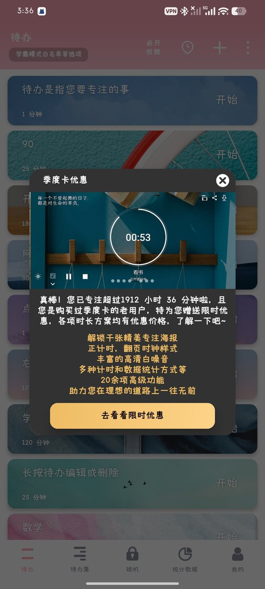

時璃風医詩🌈🏳️🌈
@hagishigure
@yozuha15 不理解為什麼要專注。好吧，也許思維模式不同。我很愛我發散的注意力。它們幫我在一大堆無意義的詞語裡面找到我熟悉的詞語。衹要一直做點什麼就行了。我們也許能找到新的治療，也就是，也許你不需要思考任務還沒完成，假如你願意去研究文學或形而上學或心理學，它們很適合。是的，那些工作更適合發散。

讴歌终结之物
@yozuha15
看懂的adhd都哭了 https://t.co/pprPQ8fx6i